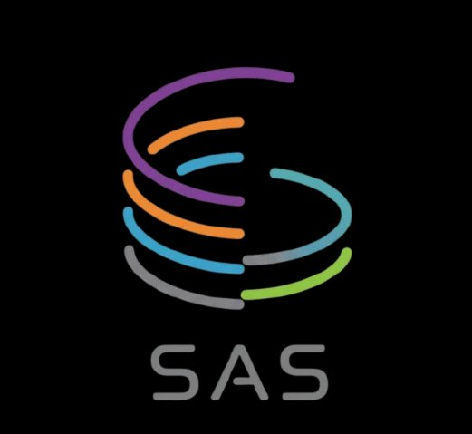

Annotate route nodes and edges on top of a ROS occupancy map
N add node E add edge V select T transformDel remove selection Esc cancel
Shift+drag or middle-click to pan.Ctrl/⌘+A all, drag to box-select, drag the group to move, drag ↻ to rotate.
A lightweight, dependency-free editor for annotating route graphs on top of ROS occupancy grid maps. Designed for navigation pipelines built on Nav2 that require semantic route information beyond raw costmap planning: nodes with types (start, goal, waypoints), directed and bidirectional edges, and arbitrary per-edge metadata such as penalties or speed limits.
Everything runs locally in the browser. The editor parses
.pgm map images and .yaml map metadata natively,
respecting the standard ROS conventions (resolution, origin, bottom-left
image anchoring). The output is a GeoJSON file in EPSG:3857 that drops
directly into Nav2 route servers and similar planners.
Place nodes and draw edges directly on top of your map. Drag to move, edges follow.
Bidirectional by default, switch any edge to unidirectional and flip its direction with one click.
Edit per-edge cost, penalty, speed limits, or any custom key-value pair your planner needs.
Import existing graphs, edit, export in a stable format compatible with Nav2 route servers.
This editor is a tool built in support of the Semantic Autonomy Stack (SAS), a layered architecture for mobile robot autonomy combining geometric navigation with semantic memory and language-based reasoning. SAS is the subject of two open-access publications: